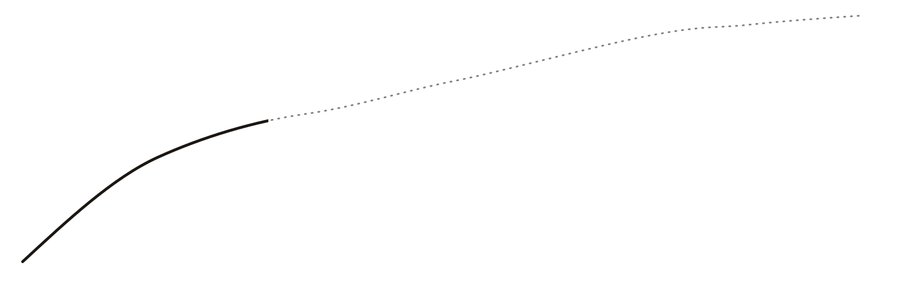
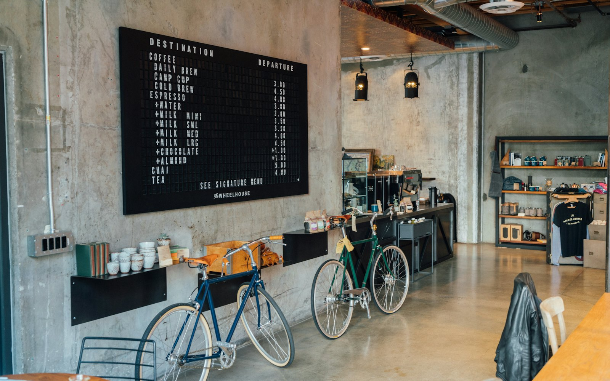
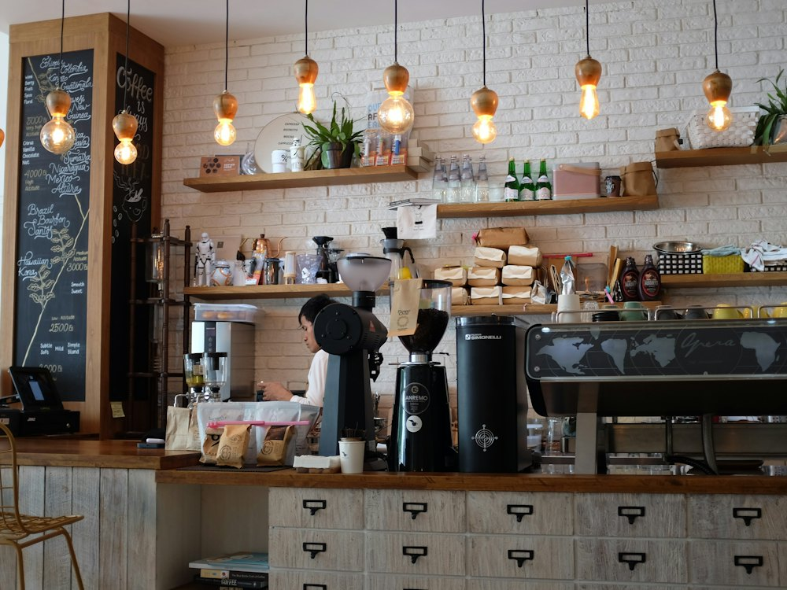
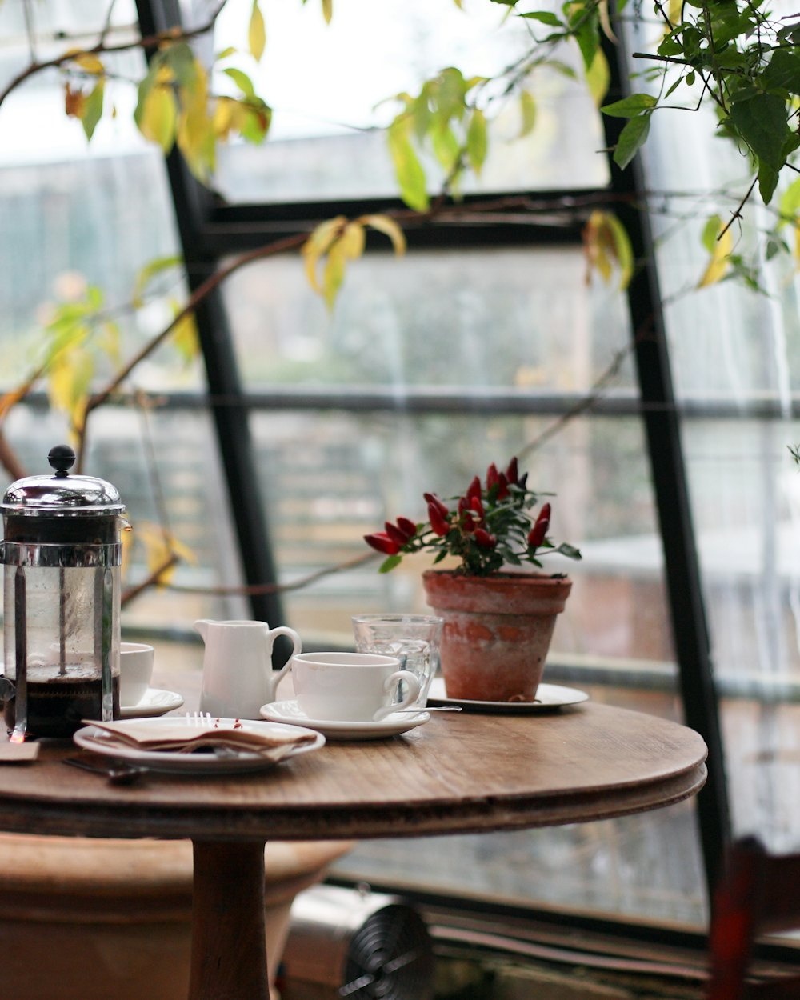
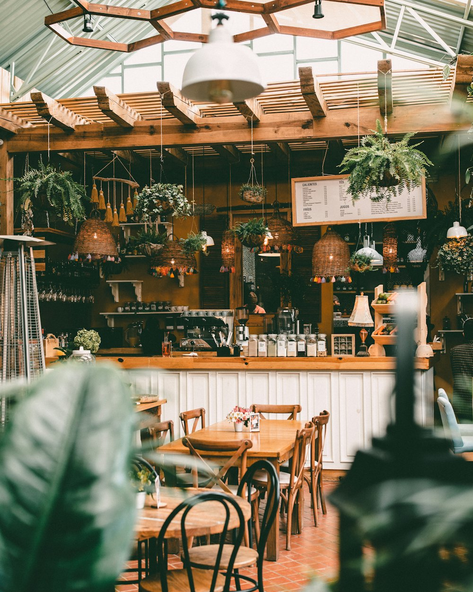
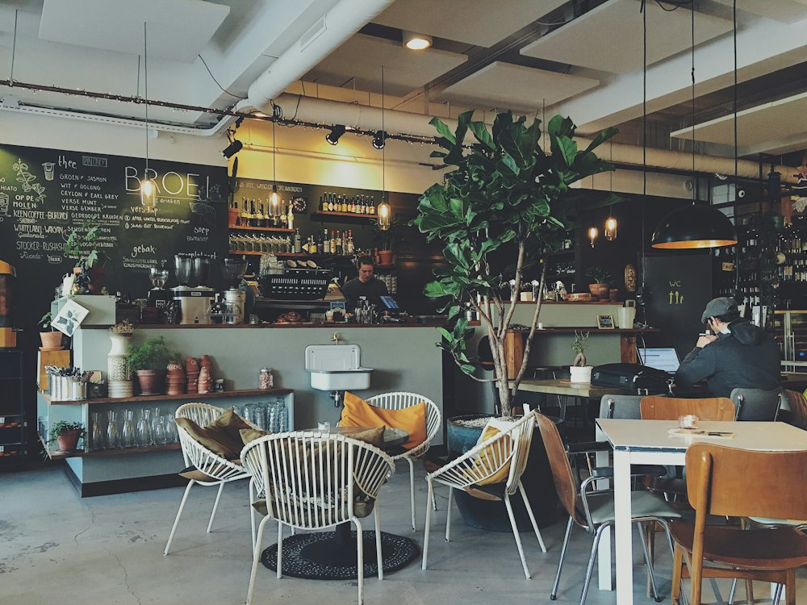
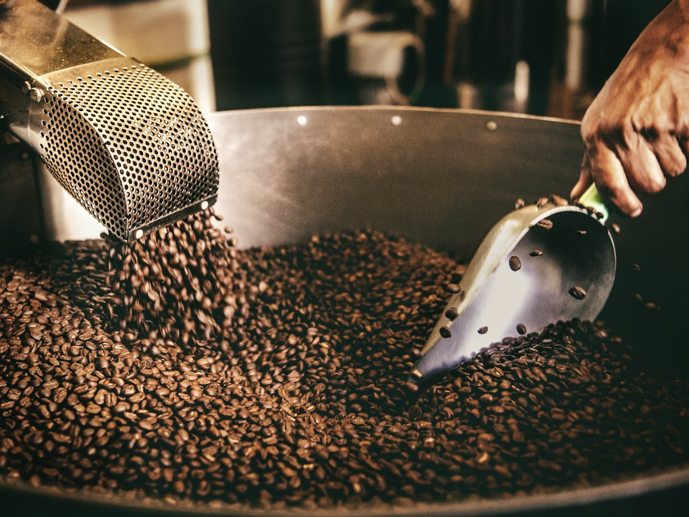

Một thềm nhà, ba chỗ ngồi
Tên quán lấy từ cái thềm trước cửa, nơi người ta hay ngồi uống cà phê và nhìn ra hẻm. Bên trong có quầy pha sát máy rang, tầng hai yên tĩnh để làm việc và một khoảng sân sau trồng cây.

sấy · 4:30 · 150°C

bảng lô hạt, đổi mỗi tuần
chỗ để xe đạp ngay trong nhà
quầy pha · 8 ghế quầy




Chọn chỗ theo việc bạn cần
Đi một mình để làm việc, đi nhóm để trò chuyện, hay chỉ muốn xem rang cà phê: mỗi khu hợp với một kiểu ghé quán.
| Khu | Số chỗ | Hợp với |
|---|---|---|
| Quầy pha | 8 | Đi một mình, xem rang, hỏi chuyện hạt |
| Tầng hai | 20 | Học, làm việc. Wifi mạnh, giữ yên lặng |
| Sân sau | 20 | Đi nhóm, trò chuyện, có mái che khi mưa |

Xem rang cà phê
Ba buổi sáng mỗi tuần, máy rang chạy từ 7 đến 9 giờ. Gọi một ly, ngồi ghế quầy, và bạn sẽ nghe được tiếng hạt nổ lần đầu.
- Thứ BaRang lô sáng cho pour-over
- Thứ NămRang lô vừa cho espresso
- Thứ BảyRang Robusta đậm cho phin